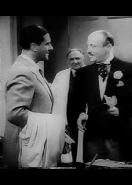
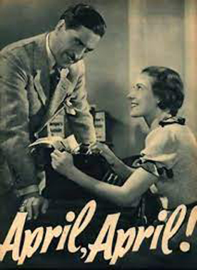
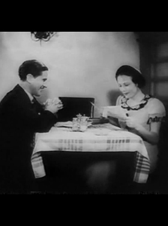

April, April !
Hilde Schneider
SYNOPSIS
Julius Lampe is a wealthy baker who receives a letter from the Prince, who would like to buy Lampe's dried pasta products, to take on an expedition to Africa. Lampe's friend Finke is tired of how pretentious Lampe is, and decides to teach him a lesson on April Fools' Day. Finke pretends to be the Prince's assistant and tells Lampe on the phone that the Prince plans to personally inspect the bakery. Lampe excitedly makes elaborate preparations for the Prince's visit.
Lampe eventually learns that the impending visit was a prank, but he has already told the whole city through the local paper that the Prince is coming to his bakery and Lampe is afraid of embarrassment if he admits that he was wrong. Finke regrets the trouble he has caused and arranges for a friend of his, Müller, to play the role of the Prince for a carefully staged fake visit to the bakery.
Meanwhile, unknown to Lampe, the actual Prince decides to visit the bakery that same day. Lampe mistakes the actual Prince for the imposter and treats him terribly, while he treats the imposter like a Prince. The real Prince falls in love with Lampe's secretary Friedel, while Lampe tries to convince the imposter to woo his daughter Mirna.
The first feature film directed by Detlef Sierck, who would go on to fame in America under his anglicised name of Douglas Sirk. The film's title is a German expression used to reveal to someone that they are the butt of an April Fools' Day prank, and translates as "April Fool!". It is an amusing satire of the bourgeoisie following the ending of the Weimar Republic.
A Dutch-language version of the film titled 't Was één April was also filmed, with Sierck directing the footage shot in Germany and Jacques van Tol directing the footage shot in Holland. The Dutch version is believed to be lost, no known copies exist.


